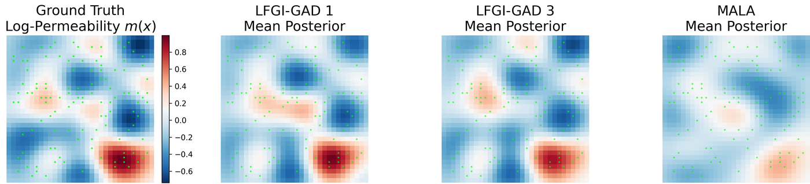

Aloïs Duston
Oden Institute for Computational Engineering and Sciences, UT Austin
I develop and train diffusion and latent generative models, and the score estimators and samplers behind them. My work pairs mathematical analysis with PyTorch training and experiments, in image generation and in scientific machine learning. I am advised by Tan Bui-Thanh in the PHO-ICES group.
Current projects: training a VAE and its latent diffusion prior end to end with an analytic score target; diffusion-based samplers for PDE-constrained Bayesian inverse problems; and variance-optimal estimators that blend denoising and target-score information.
Summer 2027: looking for a research internship on developing and training generative models (diffusion and flow models, latent and representation learning, generative scientific ML).
Featured project

End-to-end latent diffusion with CSEM In progress
Latent diffusion usually trains the autoencoder first and then fits a score network to its frozen latents. Component Score Expectation Matching (CSEM) trains them together. It replaces the sampled-noise target of denoising score matching with the analytic score of each encoder posterior. Because that target depends on the encoder's mean and covariance, the diffusion loss also trains the encoder (orange path), without the latent collapse that joint training with the standard denoising loss produces.
Other projects

Gated Action Dissipation Manuscript
Iterative diffusion transport for PDE-constrained Bayesian inverse problems, rebuilt each round from target derivatives and an unweighted sample bank.
Project page →
Laplace–Fisher Gate Identities Preprint
The variance-optimal matrix gate for blending Tweedie and target-score estimators.
Project page →
Variance-reduced diffusion sampling Preprint
Self-normalized target-score estimators and state–time dependent blending with Tweedie.
Project page →News
- Jun 2026 Preprint: Laplace–Fisher Gate Identities for Optimal Matrix-Gated Blended Score Estimation.
- Jan 2026 Preprint: Variance-Reduced Diffusion Sampling via Target Score Identity, submitted to SIAM Journal on Scientific Computing.